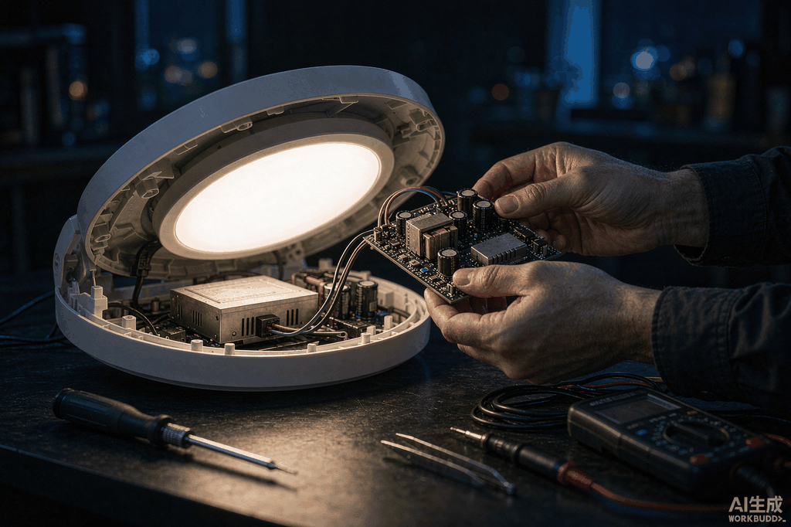
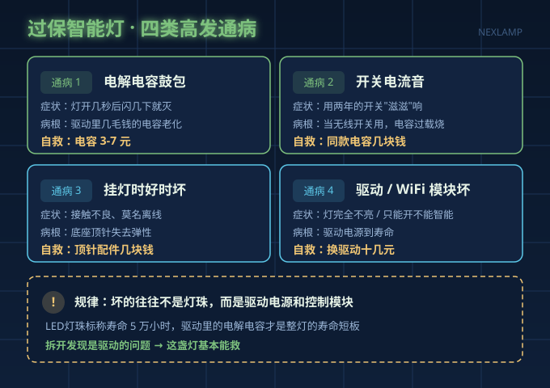
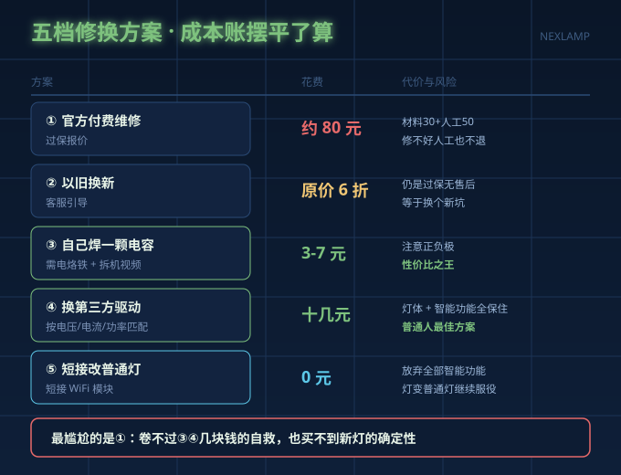
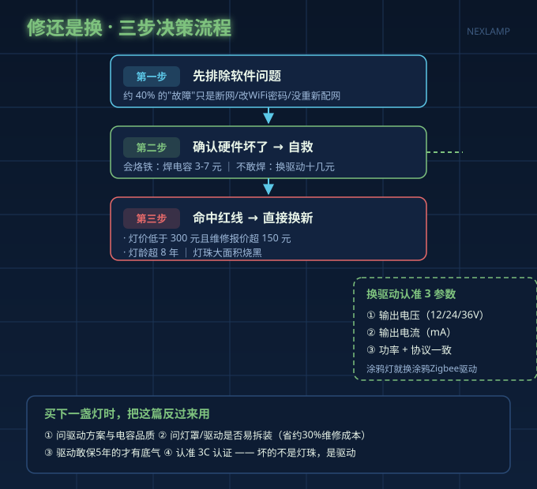

买了三年的智能吸顶灯突然罢工，打给客服，得到一句标准的回复："过保了，建议您直接换新。"你看着那盏当年花八九百买的灯，心里憋屈：真的一点救都没有吗？
我们翻完了全网能找到的智能灯维修帖——什么值得买上有人把一个品牌的维修帖汇总成清单，B站有博主拆灯实录，小红书有带功率计的实测——结论出人意料：过保智能灯的"绝症"，十有八九是小几十块能治好的病。
四类高发通病，先对号入座
| 通病 | 典型症状 | 病根 | 自救成本 |
|---|---|---|---|
| 电解电容鼓包 | 灯开几秒后闪几下就灭 | 驱动里那颗几毛钱的电容 | 电容3-7元 |
| 智能开关电流音 | 用了两年的开关"滋滋"响 | 一直当无线开关用，电容过载烧了 | 同款电容几块钱 |
| 挂灯时好时坏 | 接触不良、莫名离线 | 底座顶针失去弹性 | 顶针配件几块钱 |
| 驱动或WiFi模块坏 | 灯完全不亮，或只能开不能智能 | 驱动电源到寿命 | 换驱动十几元 |
注意一个规律：故障最多的不是LED灯珠本身（标称寿命5万小时），而是驱动电源和控制模块——它们才是整灯的寿命短板。如果你拆开灯发现是驱动的问题，恭喜，这灯基本能救。

五档方案，成本账摆平了算
全部来自真实出钱人的口径：
| 方案 | 花费 | 代价与风险 |
|---|---|---|
| ① 官方付费维修（过保报价） | 约80元（材料30+人工50） | 人工费修不好也不退；部分品牌直接不受理 |
| ② 客服引导"以旧换新" | 原价6折左右 | 仍是过保无售后，等于换个新坑 |
| ③ 自己焊一颗电容 | 3-7元 | 要会用电烙铁，注意正负极 |
| ④ 换第三方驱动 | 十几元包邮 | 认对型号即可，灯体和智能功能都保住 |
| ⑤ 短接WiFi模块改普通灯 | 0元 | 放弃全部智能功能，灯变普通灯继续服役 |
看下来最尴尬的是①：卷不过③④几块钱的自救，也买不到新灯的确定性。维修行业的数据也印证了这一点——智能灯报修里约四成是调光模块故障，专业维修换模块只要整灯费用的三分之一，但多数上门师傅图省事直接报"换整灯"。

决策分界线就一个问题：敢不敢动手
修还是换，不必纠结，按这三步走：
第一步，先确认是不是软件问题。 有维修团队统计过，2025-2026年的智能灯工单里约40%最终只是网络设置和设备重置——灯根本没坏。换个路由器、改了WiFi密码都会导致"离线"，重启网关、重新配网五分钟能解决的事，别急着拆灯。
第二步，会拿烙铁，就选自救。 通病里的电容类故障，看个拆机视频就能上手，7块钱解决。不敢碰烙铁但敢拧接线端子的，选④换驱动——下单前拍下旧驱动的标签，按输出电压、输出电流、功率三个参数找同规格，智能款还要确认协议一致（涂鸦Zigbee的灯就换涂鸦Zigbee驱动）。螺丝孔位对不上是常见小事，垫个支架或打两个孔都能解决，有人用米家驱动替换某品牌吸顶灯驱动，孔位完全对得上。
第三步，出现这些情况直接换新： 灯本身价值低于300元且维修报价超150元；灯龄超过8年（线路和配件整体老化，修好这里坏那里）；灯珠大面积烧黑（往往伴随驱动过流，只换灯珠是保留隐患）。

买下一盏灯时，把这篇反过来用
修换账算多了会发现，决定五年后你是修灯还是扔灯的，其实是买灯那一刻：
- 问驱动：用什么方案驱动？电解电容是不是大厂的？有没有过载和浪涌保护？
- 问拆装：灯罩是卡扣+螺丝双固定还是一次性卡扣？驱动是螺丝固定还是胶水粘死？易拆装的灯全生命周期维修成本低三成左右。
- 问质保：主流只给1-2年，驱动敢保5年的才是对自家寿命有底气。
- 认3C：驱动带3C认证是最起码的安全底线，杂牌驱动省的那十块钱，可能就是过保前提前罢工的原因。
灯这东西，坏的往往不是看得见的灯珠，而是看不见的驱动。过保不等于报废——先查软件，再查通病，实在不行十几块换个驱动，你的灯还能再战五年。
耐利普科技专注LED驱动电源与智能照明方案，涂鸦Zigbee/Matter智能驱动全系支持单独更换，3C认证，需要选型建议欢迎联系刘先生：13825496855。